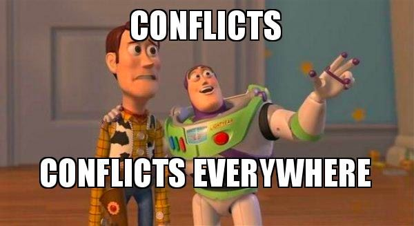

Development Best Practices
All About Perspective

R is the standard-bearer for data analysis tooling
Shiny App Development
Not just providing another interface for data analysis
You are engineering an entire workflow
This Could Happen to You



Thinking of You
These principles can guide (future) you on the right path:
- Deliberate control of app dependencies
- Managing code complexity with native R frameworks
- Creating modules for streamlined organization and re-usability
Others not covered today
- Rapid prototyping in design process
- Defending against regressions with testing
- Version control for collaboration and peace of mind
Application Dependencies
It’s Never Just Shiny
… at least for production-quality apps!
- External data sources
- Connections to other execution backends
- Additional R packages!
Turned Upside-Down
Imagine your application is working great!
update.packages(ask = FALSE)
remotes::install_github("pkg")
Turned Upside-Down
ggplot2 version 0.9.3

ggplot2 version 1.0.0

Take Control with {renv}
Create reproducible environments for your R projects.
- Next generation of
{packrat} - Isolated package library from rest of your system
- Transfer projects to different collaborators / platforms
- Reproducible package installation
- Easily create new projects or convert existing projects with RStudio or built-in functions.
Under the Hood
Upon initializing a project:
- Project-level
.Rprofileto activate custom package library on startup - Lockfile
renv.lockto describe state of project library renv/libraryto hold private project libraryrenv/activate.Rperforms activation
Application Structure
Enter the {golem}
Opinionated framework for building production-grade Shiny applications as R packages
- Scripts guide you with first steps akin to
{usethis}&{devtools} - Encourages Shiny best practices (especially modules)
- Streamlines deployment on multiple platforms
What are Modules?
Building blocks to compose any Shiny app out of smaller, more understandable pieces
- Avoids namespace collisions when using same widget across different areas of your app
- Allow you to encapsulate distinct app interfaces
- Organize code into logical and easy-to-understand components
- Facilitate collaboration
Sound familiar?
- R functions also help avoid collisions in variable names with general R code
- Essential for creating non-trivial and extensive workflows
Anatomy of a Function (UI)
artUI <- function() {
tagList(
checkboxInput(
"input1",
"Check Here"
),
selectInput(
"input2",
"Select Object",
choices = c("jar", "vase"),
selected = "jar",
multiple = FALSE
),
plotOutput("plot1")
)
}Anatomy of a Module (UI)
artUI <- function(id) {
ns <- NS(id)
tagList(
checkboxInput(
ns("input1"),
"Check Here"
),
selectInput(
ns("input2"),
"Select Object",
choices = c("jar", "vase"),
selected = "jar",
multiple = FALSE
),
plotOutput(ns("plot1"))
)
}Anatomy of a Module (UI)
Anatomy of a Module (Server)
artServer <- function(input, output, session) {
df <- reactive({
# do something fancy
})
output$plot1 <- renderPlot({
ggplot(df(), aes(x = x, y = y)) +
geom_point()
})
}Anatomy of a Module (Server)
artServer <- function(id) {
moduleServer(
id,
function(input, output, session) {
df <- reactive({
# do something fancy
})
output$plot1 <- renderPlot({
ggplot(df(), aes(x = x, y = y)) +
geom_point()
})
}
)
}Minimal changes necessary
Anatomy of a Module (Server)
:thinking: id
- `
moduleServer(): Encapsulate server-side logic with namespace applied.
Invoking Modules
ui <- fluidPage(
fluidRow(
artUI("mod1")
)
)
server <- function(input, output, session) {
artServer("mod1")
}
shinyApp(ui, server)Giving and Receiving
artUI <- function(id, choices = c("jar", "vase")) {
ns <- NS(id)
tagList(
checkboxInput(
ns("input1"),
"Check Here"
),
selectInput(
ns("input2"),
"Select Object",
choices = choices,
selected = choices[1],
multiple = FALSE
),
plotOutput(ns("plot1"))
)
}- Reasonable inputs: static values, vectors, flags
- Avoid reactive parameters
- Return value:
tagList()of inputs, output placeholders, and other UI elements
Giving and Receiving
artServer <- function(id, df, title = "My Plot") {
moduleServer(id,
function(input, output, session) {
user_selections <- reactive({
list(input1 = input$input1, input2 = input$input2)
})
output$plot1 <- renderPlot({
ggplot(df(), aes(x = x, y = y)) +
geom_point() +
ggtitle(title)
})
user_selections
}
)
}- Input parameters (and return values) can be a mix of static and reactive objects
To () or not to ()
# app server
df <- reactive({
art_data |>
filter(dept == input$dept)
})
artServer("mod1", df)artServer <- function(id, df, title = "Amazing") {
moduleServer(id,
function(input, output, session) {
user_selections <- reactive({
list(input1 = input$input1,
input2 = input$input2)
})
output$plot1 <- renderPlot({
ggplot(df(), aes(x = x, y = y)) +
geom_point() +
ggtitle(title)
})
user_selections
}
)
}- Reactive parameters reference by name:
df - Inside module, invoke reactive parameter as you would any other reactive in Shiny:
df() - Any reactive(s) returned by module should also be reference by name:
user_selections,user_selections()
Code-Along
Applying {golem} & {renv}to our simclindata.shiny application